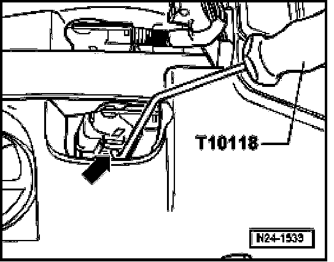

Technician Safety Information
Safety Precautions
WARNING:
Observe the following for all installations, especially in engine compartment due to lack of room:
- Route lines of all types (e.g. for fuel, hydraulic, EVAP canister system, coolant and refrigerant, brake fluid, vacuum) and electrical wiring so that the original path is followed.
- Watch for sufficient clearance to all moving or hot components.
To reduce the risk of personal injury and/or damage to the fuel injection and ignition system, always observe the following:
- Do not touch or disconnect ignition wires when engine is running or turning at starting RPM.
- Only disconnect and reconnect wires for injection and ignition system, including test leads, when ignition is switched off.
If engine is to be cranked at starting RPM without starting:

- Disconnect connector from ignition coils 1 to 6.
Assembly tool T10118 is recommended to release connector catches.
- To do so, attach assembly tool T10118 on locking button (arrow)and then carefully pull down connector.
NOTE: Before disconnecting harness connectors, mark allocation to component.
If special testing equipment is required during road test, note the following:
- Test equipment must always be secured to the rear seat and operated from there by a second person.
- If test and measuring equipment is operated from the passenger seat, the person seated there could be injured in the event of an accident involving deployment of the passenger-side airbag.